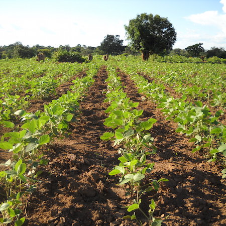

About This Project
Soybeans have quickly become one of the most important staple crops of the world. First cultivated in ancient East Asia, these oilseeds are now widely cultivated in many countries across the world, and soy is a components of countless food products. Our aim in this project is to examine multiple facets of the soy commodity chain in order to investigate the factors behind the rise of the soybean in recent decades. We have chosen four main angles for our investigation: geography, labor, economics, and ecology.